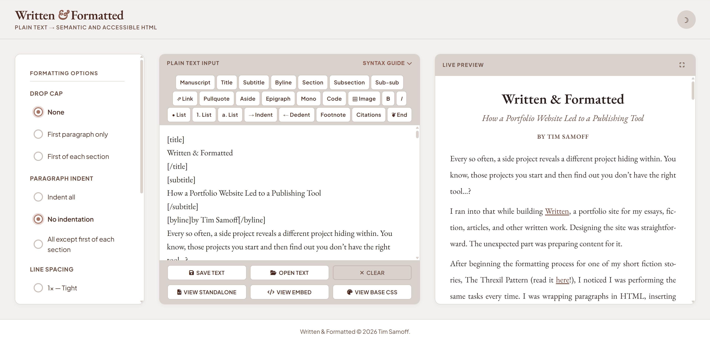
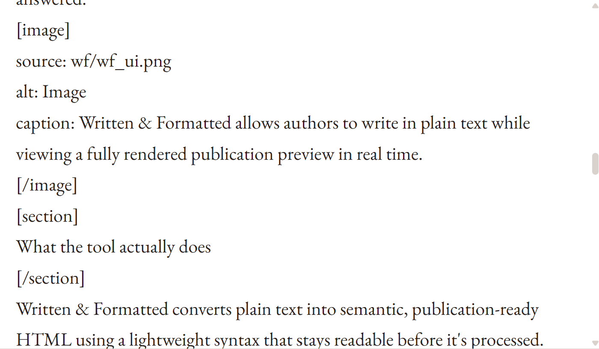
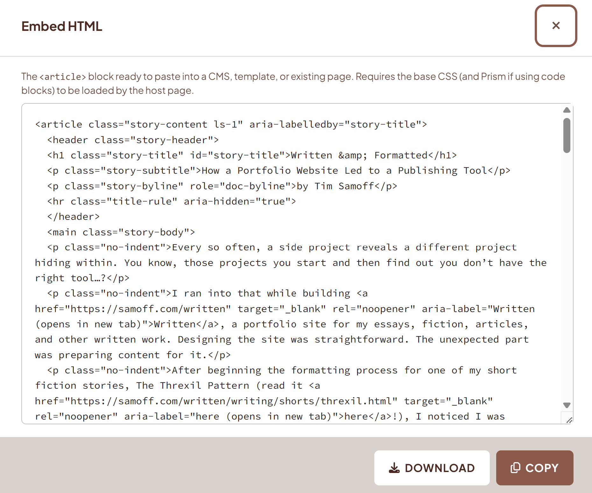
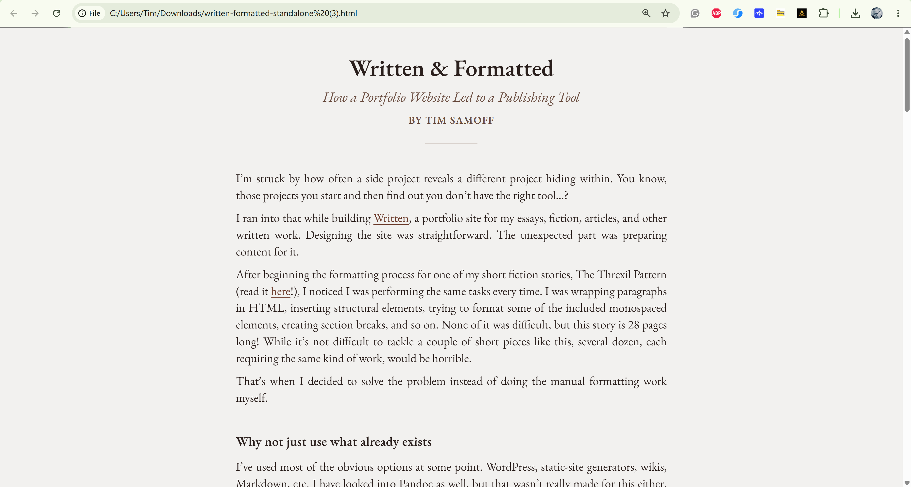

Written & Formatted
I’m struck by how often a side project reveals a different project hiding within. You know, those projects you start and then find out you don't have the right tool…?
I ran into that while building Written, a portfolio site for my essays, fiction, articles, and other written work. Designing the actual portfolio site was pretty straightforward. The unexpected part was preparing content for it.
After beginning the formatting process for one of my short fiction pieces, The Threxil Pattern (read it here!), I noticed I was performing the same tasks every time. I was wrapping paragraphs in HTML, inserting structural elements, trying to format some of the included monospaced elements, creating section breaks, and so on. None of it was difficult, but this story is 28 pages long! While it's not difficult to tackle a couple of short pieces like this, several dozen, each requiring the same kind of work, would be horrible.
That's when I decided to solve the problem instead of doing the manual formatting work myself.Introducing Written & Formatted:
https://samoff.com/written/app/
Why not just use what already exists
I've used most of the obvious options at some point. WordPress, static-site generators, wikis, Markdown, etc. I have looked into Pandoc as well, but that wasn't really made for this either. Don't get me wrong. They're all capable tools. But they are bloated for my simple needs and aren't really geared for, well, this kind of writing.
Most content management systems assume you're publishing inside their ecosystem. They define how content is stored, structured, and delivered. This is great for blog-style writing – and there are some good literary-styled themes out there – but they don't suit experimental or independent publishing at all. They also don't allow for different styles of writing, like short fiction, poetry, or academic papers, all under the same theme.
Markdown-based tools get closer to what I need, but they still require us to think about markup rather than plain prose. That's a reasonable tradeoff for many people, but I wanted to make something that worked for me and was possibly easy enough for non-techy authors to use.
The publishing conventions I care about – things like drop caps, epigraphs, pull quotes, citations, figures, manuscript-style headers, etc. – aren't the easiest things to create using most of these systems without plugins, workarounds, or diving into the HTML and CSS. I wanted a tool that treated literary and academic formatting as first-class concerns, not afterthoughts.
Earlier experiments
The ideas behind Written & Formatted aren't new to me. My background spans web design, UX, interactive media, software development, and higher education. Across those disciplines, for some reason, I keep returning to the idea that we can make the computer work for us to automate simple tasks. Yeah, this is nothing new, especially with the advent of AI, but go with me here…
In 2017, while developing a game called HMLabs, I built an interactive console that translated player input into structured game responses. It was an experiment in taking ordinary text and making it do something extraordinary.
Come to think about it, I even engaged in this sort of experimentation with my Apple II as a kid! I remember programming a splash screen in Basic that took asterisks and pip symbols and animated them so that they appeared to twirl around to eventually spell the title of my "software" (that I never actually completed).
Continuing in this vein, in 2018, I built a browser-based prototype exploring real-time plain text-to-HTML conversion, which accumulated over 250,000 views on CodePen.
Neither project had anything to do with literary publishing, but both were asking the same underlying questions that I think Written & Formatted has answered.

What the tool actually does
Written & Formatted converts plain text into semantic, publication-ready HTML using a lightweight syntax that stays readable before it's processed. Most formatting is expressed through simple bracketed tags – [title], [pullquote], [epigraph], [code] – rather than raw HTML or interface controls. A live preview updates automatically as you write, so source and rendered output are always visible side by side.

The output is intentionally generic. Written & Formatted generates clean, semantic HTML and keeps visual styling in a separate downloadable stylesheet, which makes the output easier to customize and reuse across different contexts. From a single source document, you can export a complete self-contained webpage, an embeddable HTML package ready to drop into an existing site, or raw markup that can be copied back into the tool. The base CSS is also downloadable and themeable independently.
There are also a few automatic features, such as smart quote conversion, automatic section breaks, and more.
Current core features include:
- 100% accessible for screen readers and keyboard navigation
- Real-time plain text-to-HTML conversion with live preview
- Tagging toolbar and collapsible syntax reference
- Semantic document structures: titles, bylines, section headings, auto-linked footnotes, and citations with return links
- Literary formatting: drop caps, epigraphs, pull quotes, section break ornaments, end markers
- Syntax-highlighted code blocks
- Monospaced text
- Nested headings and lists
- Editorial image handling with alt-text prompting
- A proper manuscript tag that adheres to short story submission guidelines
- Export as a standalone webpage, embeddable HTML/CSS package, or raw semantic markup
- Downloadable base stylesheet
- Plain-text save of the source document

Separating structure from appearance
One decision made early on, was to keep structure and presentation separate. I wrote the application to think about what a given element is rather than how it should look. For instance, footnotes and pull quotes might appear on a single page, but they represent fundamentally different kinds of information. The markup in Written & Formatted treats them accordingly.
Of course, this is nothing new either. The separation of content and presentation has been a core tenet in web development for decades. What interested me was applying it to literary and academic publishing in a way that remained approachable for writers who don't want to think about HTML at all.
Where it stands
I like to build tools like most people pick up hobbies. Written & Formatted is one of several applications I've made, and it shares a shelf with others that solve specific problems I always run into.
Written & Formatted has become essential in a way I didn't anticipate. What used to take hours of repetitive hand-formatting now takes a few minutes. Even though the application was made to support my writing portfolio, I kind of think of them as a single thing: the site and the system that powers it.
But the problems it solves aren't specific to me. And if it's useful to other writers, researchers, or independent publishers, I'm glad to share it.

I'm going to consider the project as "under construction" for the time being. So if you want to suggest any features or revisions, let me know. Currently, Written & Formatted doesn't inherently support screenplay formats, but maybe it will someday.
More than anything, I'd love to know if you use it and if it's helpful.
Page formatted by Written & Formatted. © Tim Samoff.